開工前，先把自己的家打掃乾淨
Matt 一開始就承認一件事：他對 context 的偏執，是從做 AI 產品帶過來的職業病。做 AI-powered app 時，你要對每一個進到 context window 的 token 錙銖必較，因為那直接決定你的 eval 過不過。他把這種偏執原封不動地搬進了 AI coding，理由很直接——如果你的 harness 在你打第一個字之前，就已經塞了一堆不相干的東西進去，那你不可能得到你期待的結果。
示範的做法很樸素：把 `.claude` 目錄下的 `settings.json` 和 `skills` 資料夾整個改名備份，讓 Claude Code 回到出廠設定，然後跑一次 `/context` 看看基線是多少。結果是光是預設的 MCP 工具、內建 skill 跟專案設定，就吃掉了 23K token，而這還是在你還沒送出任何一則訊息之前。把設定清空重跑之後，同樣的 `/context` 只剩 6.6K，也就是單靠清掉個人設定的殘留，就省下了 17K token。這不是為了省錢——Matt 特別強調，這不是在 min-max token 花費，是為了把「smart zone」的可用空間撐開，讓你有更多聰明的算力可以花在真正的任務上。
下一步是實際去看 model provider 收到的原始 payload。用 request logger 攔下一次最簡單的「hello」訊息，翻開 log 裡的 `system` XML 標籤，會看到環境資訊、context management 指示、近期 commit，再往下是每一個工具的完整定義——光是工具定義本身就藏著大量與這次任務無關的說明文字，甚至包括怎麼寫 commit message、怎麼編輯 PR body 這種你根本沒用到的指示。Matt 要求學員自己動手翻一遍這份 log，感受那種「被塞了一堆不相干東西」的不舒服感，這種不舒服感才是真正驅動你去清理設定的動力，光聽別人講一遍沒有用。
清乾淨之後，你還需要看得見用量才有辦法持續控管。Matt 用一段可以直接貼給 agent 的說明，讓 Claude Code 在 status line 常駐顯示 context 用量，設定完成後基線落在 11.7K token，接著隨手問一句摘要，用量跳到 12K 左右，也就是一次很輕的往返，實測大概吃掉 300 個 token。這個數字本身不重要，重要的是「看得見」這件事——你對 context 的敏感度，決定了你多快能發現自己正在往 dumb zone 滑落。這是整章接下來所有判斷的前提：如果你連自己現在用了多少都不知道，後面講的清空、壓縮、交接全部無從談起。

探索是第一步，也是決定成敗的一步
清理完環境，Matt 把焦點轉到一個更根本的限制：statelessness，也就是模型什麼都不記得。每次新開一個 session，agent 都要從零開始摸索這個專案是什麼、技術棧是什麼、規則在哪裡，而它探索得好不好，直接決定了後面一切工作的品質。如果它一開始就沒找到該找的資訊，你不可能指望它後面做出你要的東西。
要理解 agent 探索時到底看到了什麼，最直接的方式仍然是回頭看 request logger 抓下來的環境區塊。Matt 實測發現，environment 段落裡有平台（他自己是 WSL 上的 Linux）、工作目錄、是否在 git repo 裡、shell 種類、模型自己的知識截止日期、目前分支、main 分支名稱、git user、git 狀態、還有最近一次 commit——但完全沒有目錄底下檔案結構的任何資訊，連一個 `ls` 都沒有。也就是說 agent 對這個專案的第一印象，只有目錄名稱、一點模糊的環境資訊、幾筆 commit 訊息，剩下的全部要靠它自己去讀去找。這也是為什麼 Matt 讓學員先清空 context，親自去問 agent「這個專案的技術棧跟目的是什麼」，然後留意它是自己一個檔案一個檔案讀，還是派出 subagent 去探索——探索策略本身,就是在替後面每一次互動的效率打底。
真正把探索這件事拉到職業級別的，是「teach」這個 skill。Matt 把它形容成自己最喜歡的 skill 之一，用途遠不止上課用——遇到陌生的程式庫，直接叫 agent `/teach`，告訴它「教我這個 repo」，並且附上你自己的經驗等級（有沒有寫過 TypeScript、熟不熟 React、清不清楚 client/server 的分野），agent 就會針對你的程度客製化一份導覽。這個動作本質上是把探索這件事「產品化」——不是你去適應 agent 的探索結果，而是讓 agent 的輸出反過來配合你需要理解到什麼深度。這對每個換過工作、接手過陌生程式碼的人來說都不陌生，只是現在多了一個不會嫌你問題笨的導覽員。
第一次不設限的建置，是一面照妖鏡
探索完之後，Matt 直接進入實作：做一個課程評價系統，學生可以幫課程打星等。他刻意選了一個「工作量不小但 UI 不複雜」的功能，橫跨後端邏輯、資料層、前端顯示，但沒有太多視覺細節要糾結。這一節的關鍵不在功能本身，而在 Matt 明講了這是一個沒有教任何技巧的基準測試——不教規劃、不教怎麼跟 agent 對齊，就是單純把需求丟給 agent，看它自己會做出什麼樣子，同時要求學員邊做邊觀察 context 用量怎麼往上爬、什麼動作特別耗 token、agent 有沒有主動派出 subagent 去探索。
這個練習之所以重要，是因為它替後面幾節的問題先鋪好了對照組。先看一次「什麼都不管」的結果長什麼樣，後面談 plan mode 為什麼不夠、談 grilling 為什麼有用，才有一個可以拿來比較的基準，不然所有的改進技巧都會顯得像是空談。
Plan mode 解決不了真正的問題
下一節揭曉了那次沒設限建置的結果：功能大致做出來了，但有個嚴重 bug，而 Matt 真正在意的不是 bug 本身，而是整個過程裡「agent 一探索完就立刻開始實作，完全沒有跟人核對過要蓋的到底是不是那個東西」。這種急著交出成品的傾向，是 agent 一種近似諂媚的性格特徵——你說你想要某個東西，它就會直接去把那個東西生出來，不會停下來確認彼此對「那個東西」的理解是不是一致的。
很多人會覺得 plan mode 就是解方：先讓 agent 規劃、產出一份計畫文件、你看過覺得OK再繼續。Matt 實際示範了一輪 plan mode，結果卻讓人洩氣——plan mode 產出的規劃文件，讀起來幾乎就是實作本身的翻版，一樣是急著把東西生出來，只是生出來的東西換成了一份寫得像實作細節的計畫書，同一種「急著完成」的衝動只是換了個載體。他借用《The Design of Design》裡「design concept」這個概念來解釋問題所在：真正的設計不是一份文件，而是一群人在討論過程中逐漸收斂出的共同理解，隨著對話推進慢慢變清晰。plan mode 跳過了這個逐步收斂的過程，直接跳到成品階段，所以它治標不治本——如果一開始的探索沒有對齊，plan mode 只是讓你在對齊沒發生的情況下，多看一眼即將要出錯的東西而已。這在簡單功能上無傷大雅，但功能一複雜，這種缺乏對齊的急就章遲早會在某個地方翻車。
Grill 到底、再放手去做
Matt 給的解法是一個叫「grill me」的 skill，核心規則寫在 skill 文件的第一句：持續逼問使用者，直到雙方達成共同理解，逐步縮小到設計樹的每一條分支都被走過、沒有任何東西是默默被假設的，在使用者確認達成共同理解之前，不准動手做。這跟 plan mode 表面上很像，都是在動工前先停一下，但精神完全不同——plan mode 產出的是一份等同於實作的文件，grilling 產出的是一段真正發生在雙方之間的討論，直到那個「design concept」在對話裡逐漸清晰為止。
實作上，這個循環被 Matt 稱為 grill-execute-clear：先 `/grill-me` 針對一個很鬆散、甚至不需要講清楚的初始想法展開討論（這一章示範的是「讓學生和講師可以在課程頁面留言」），一路問到雙方真正對齊，再放手讓它進實作，最後在合適的時機做一次收尾清理。這一章沒有走完整個循環的細節（留給下一章的解決方案），但這個順序本身已經是一個判斷：把「對齊」這件事從一次性的計畫審核，換成一段持續進行的追問，才是真正能防住急就章的機制，而不是多加一道審批流程。
Compaction 與 handoff：兩種把記憶搬家的方式
實作到一半，context 用量往上衝，Matt 帶出了整章最實用的核心概念：compaction。當你已經逼近 smart zone 的邊界，繼續下去意味著模型會慢慢退化、你也會花更多 token（因為每次 request 都要把之前所有的 token 一起送出去，就算有快取加持，你還是在一個延遲更高、判斷力打折的環境裡工作）。但完全清空 context 也不對——如果直接 `/clear`，agent 會失去先前 grilling 階段辛苦建立起來的理由與決策脈絡，之後就算重新探索程式碼，也補不回那些「為什麼這樣做」的推理過程。
Compaction 的做法是折衷：把目前 session 的內容摘要壓縮，拿去餵一個全新的 session，讓新 session 從壓縮版的記憶開始，而不是從零開始。Matt 在 Claude Code 裡示範 `/compact`，並附上一句摘要指示（這句指示很重要，因為執行摘要的也是一個語言模型，你給它的線索愈明確，它愈知道該保留什麼），結果很直接：原本累積到 150K token 的 session，壓縮之後只剩 28.3K token，摘要裡還保留了關鍵檔案的引用，等於是幫下一個 session 先劃好重點筆記。Matt 用歷史學家的比喻形容這個過程——原始 session 是第一手史料，壓縮出來的摘要是二手史料，任何二手史料都必然是有損的，你用效率去換取的，是必然會流失掉的某些細節與語氣。在「要對已完成的工作做 QA」這種情境下，這筆交易划算到近乎理所當然，但這不代表壓縮永遠是免費的午餐。
Compaction 有個結構性的限制：它只能在同一個目錄、同一個 agent 內部運作。如果你想從 Claude Code 做完的實作，交給 codex 去review，compaction 根本用不上。Matt 為此做了另一個 skill：handoff。邏輯跟 compaction 一模一樣，只是不在記憶體裡摘要，而是把摘要寫成一份 `handoff.md`，存到作業系統的暫存目錄——這個檔案是刻意設計成用完即丟的，不會被長期保存，電腦下次重開機或系統清理暫存目錄時就會消失。這份檔案完全可攜，可以餵給另一個 agent、另一個目錄、甚至直接傳給同事。示範裡 Matt 在星等評分系統做到大約 89K token 時，跑了 `/handoff`，附上「交給 codex review」的說明，產出的文件跟 compaction 摘要長得很像，一樣有詳細的檔案引用。Handoff 比 compaction 更靈活，能跨 agent、跨目錄，代價是操作起來也更繁瑣——兩者不是取代關係：留在同一個目錄、同一個 agent 裡繼續工作，compaction 依然是更順手的選擇；一旦要跨出這個邊界，handoff 才是唯一能用的工具。
五選一：在每個階段邊界，你到底該怎麼決定
把前面幾節串起來看，Matt 指出每一次 AI coding session 其實都是由一連串「階段」構成的——grilling、implementation、QA，這些階段之間的邊界，才是真正決定你效率好壞的節點。他把這個邊界上的選擇整理成一棵決策樹，總共五個選項：繼續在目前 session 做下去、完全清空 context、compact 之後接續、handoff 成一份可攜文件、或是派 subagent 去處理然後回報。
決策樹的走法是：第一步先問「能不能直接繼續」——如果 smart zone 還有餘裕，而且下一階段用得到目前累積的 context（例如從 grilling 直接進 implementation），那就不用動任何東西，直接往下做。走不下去了，才問「這段 context 對下一個任務還有沒有用」——如果完全用不上，`/clear` 是最划算的選項，因為它幾乎零成本，直接把 smart zone 清到最大。如果 context 有用但要換 agent、換目錄或換人，走 handoff；如果任務可以完全放手讓 agent 自己做、不需要人在場盯著（Matt 稱這種狀態是 AFK，away from keyboard），那很適合派 subagent 去跑，讓它在自己獨立的 context window 裡工作，不干擾主 session。剩下所有情況——context 有用、不用跨 agent、人還得在場——預設答案就是 compact。
Matt 老實承認這棵樹裡每個判斷都帶著主觀成分，不是一套可以套公式硬算的規則。但他給的具體例子仍然很有參考價值：grilling 結束時用量大概只有 30K token，這種情況顯然該直接續接進 implementation；implementation 做到大約 150K token 準備要 QA，這時候該考慮的就是 compact，而不是硬撐著在同一個 session 裡把 QA 也做完。這棵決策樹真正的價值不在於給出標準答案，而在於逼你在每個階段邊界都停下來問一次「我現在該做什麼」，而不是任由 harness 的預設行為替你決定。
自動 compaction：方便，但代價是你放棄了掌控權
最後一節把鏡頭轉向一個大家遲早會撞見的問題：如果你什麼都不管，硬把 context 塞爆會怎樣。Matt 用的模型（逐字稿裡稱作 Opus 4.8）擁有一百萬 token 的 context window，如果你真的往 model provider 送出超過一百萬個 token 的請求，會直接收到錯誤——模型根本沒辦法處理那麼多 token，這是一道硬性上限，不是軟性建議。為了避開這個懸崖，每個 harness 都內建了自動 compaction：一旦用量逼近上限，系統會暫停 session、自動幫你壓縮。Matt 在 Claude Code 的 `settings.json` 裡示範了 `auto-compact` 這個設定，還可以自訂觸發的 token 門檻，比如設成 250,000 token 就提前觸發。
自動 compaction 聽起來像是免除了整章前面所有判斷的萬靈丹——如果它總能在對的時機自動幫你壓縮，你何必自己管理 phase boundary？網路上確實有不少人這麼認為。但 Matt 的實測經驗不是這樣。他指出自動壓縮最危險的地方，是它完全不管你現在正處在哪個階段，如果它剛好在 grilling 進行到一半、或是 implementation 寫到一半就觸發，agent 會拿著一份「只剩摘要」的記憶繼續往下走，而 Matt 的親身經驗是：implementation 中途被自動壓縮，常常會直接讓 agent 迷失方向，後半段程式碼的風格跟前半段完全不一致，甚至整個忘記原本該實作的功能。相對地，如果壓縮發生在階段邊界（比如 grilling 剛結束、implementation 還沒開始），代價就小得多——同一個「壓縮」動作，發生在階段中間還是階段邊界，效果可以是災難和無感之間的差距，而自動 compaction 完全不知道這個差別，它只認得 token 數字。
自動壓縮還有一個更隱性的問題：它拿掉了你告訴系統「這次要保留什麼重點」的機會。Matt 反覆強調，不管是 `/compact` 還是 `/handoff`，那句附帶的摘要指示都是關鍵，因為執行摘要的也是一個語言模型，你給的線索愈精準，它愈知道該把什麼留下來。自動觸發的壓縮沒有這一步，它只能憑自己的判斷去猜什麼重要。Matt 對這整件事的立場非常明確：他傾向讓人類自己掌握這套決策樹，而不是把責任下放給 harness，因為這是一次性的學習曲線——一旦你學會判斷該繼續、該清空、該壓縮、該交接、還是該派 subagent，你的 session 就會更常留在 smart zone 裡，結果只會越來越好。所以他的結論相當直白：如果你發現自己常常撞上 auto-compact 的緩衝區，那通常代表哪裡出了問題，而不是代表這個機制運作良好。